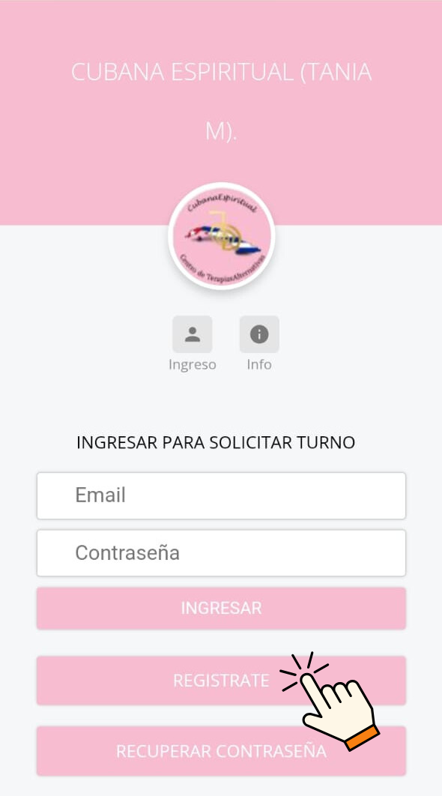
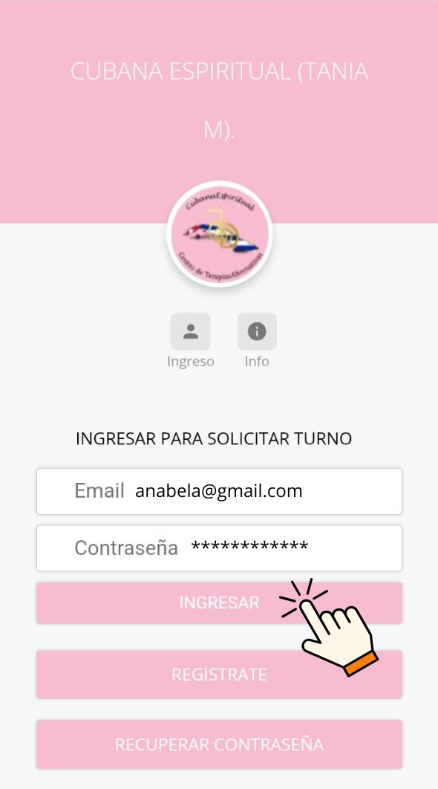

Instructivo para el Sistema de Turnos
PASO N° 1
Ingresar a través del link de los turnos https://www.neocita.com/turnostaniamorales o por los accesos que le proporciona la web de Cubana Espiritual
PASO N° 2
Si aún no estás en el sistema, ingresa al botón “Regístrate” y completa los campos. Si ya estás registrado, ingresa tu mail y contraseña para poder operar.
PASO N° 3
Luego de registrarte y completar tus datos, sal de la app y vuelve a entrar. Ingresa en los campos el mail y la clave que generaste al registrarte y presiona el botón “Ingresar”.
PASO N° 4
Elige el primer día disponible en el turnero o el que más te convenga. (Nota: los que están en rojo ya están todos ocupados).

PASO N° 5
Elegir entre los horarios disponibles el que más se ajuste a tu disponibilidad.

PASO N° 6
Después de elegir el horario, lo siguiente es elegir la terapia que vas a hacerte. Luego, presiona “Solicitar turno”.
Por último, el sistema te avisará que el turno fue tomado con éxito.